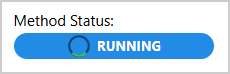
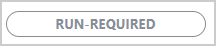
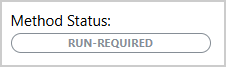
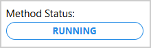

Transaction Method Status Badge#
TransactionMethodStatusBadge is a Dash All-in-One (AIO) component that provides a compact,
visual status indicator for SAF GLOW transaction methods. It displays the current status of a method
as a badge with color-coded states and optional automatic monitoring. The component supports
both synchronous and asynchronous (long-running) methods.
Key features:
Compact visual indicator: Badge showing method status (RUN-REQUIRED, RUNNING, COMPLETED, FAILED)
Color-coded states: Automatic color assignment based on status (gray, blue, lime, red)
Automatic monitoring: Optional polling with configurable intervals
Loading animation: Visual feedback during method execution
Flexible control: Manual or automatic monitoring start/stop
Customizable appearance: Configurable badge, label, and interval properties
{kind=link}

Usage#
Warning
The TransactionMethodStatusBadge component can only be used as part of a SAF-based solution.
It requires access to the GLOW API server to monitor transaction method status.
Basic usage#
The following example assumes the existence of an application with a solution definition named
MySolution, at least one step model named my_step, and a transaction method named
my_method.
Import TransactionMethodStatusBadge:
from ansys.solutions.dash_super_components import TransactionMethodStatusBadge
The TransactionMethodStatusBadge cannot be directly added to the page layout. It must be
initialized via a callback triggered on page load because it needs access to the project URL.
To control its width and alignment, wrap it in a container div with appropriate styles.
def layout_transaction_method_status_badge():
return html.Div(
[
dmc.Button(
"Run method",
id="run_method_button",
),
dmc.Space(h=16),
html.Div(
id="transaction-method-status-badge-container",
style={"width": "200px"},
),
]
)
@callback(
Output("transaction-method-status-badge-container", "children"),
Input("url", "pathname"),
)
def initialize_transaction_method_status_badge(
project: SuperComponentsWithSAFSolution,
) -> TransactionMethodStatusBadge:
"""Initialize the transaction method status badge."""
return TransactionMethodStatusBadge(
url=project.url,
step_name="my_step",
method_name="my_method",
aio_id="my_method_badge",
)
The following output is expected:
{kind=link}

Activate monitoring#
To activate monitoring when a transaction method is triggered, set the activate_monitoring
store to True:
@callback(
Output(
TransactionMethodStatusBadge.ids.activate_monitoring("my_method_badge"),
"data",
),
Input("run_method_button", "n_clicks"),
State("url", "pathname"),
prevent_initial_call=True,
)
def start_method_and_monitor(n_clicks: int, project: SuperComponentsWithSAFSolution) -> bool:
"""Start the method and activate badge monitoring."""
if n_clicks:
project.steps.my_step.my_method()
return True # Activate monitoring
raise PreventUpdate
When the button is clicked, the badge automatically updates its status and the badge appearance changes accordingly. When the method is running, the expected output is similar to the following:
{kind=link}
Note
Note that this example calls the transaction method and activates monitoring in a single callback.
This only works for asynchronous (“long-running”) transaction methods. For synchronous transaction
methods, starting the transaction method and activating the badge monitoring must be done in two
separate callbacks, see Activate monitoring for the
TransactionSupervisor component.
Advanced usage#
The following example shows a more customized badge with a label, a medium badge size, and a custom polling interval, which does not automatically stop monitoring when the method completes or fails:
@callback(
Output("transaction-method-status-badge-container-advanced", "children"),
Input("url", "pathname"),
)
def initialize_transaction_method_status_badge_advanced(
project: SuperComponentsWithSAFSolution,
) -> TransactionMethodStatusBadge:
"""Initialize the transaction method status badge."""
return TransactionMethodStatusBadge(
url=project.url,
step_name="my_step",
method_name="my_method_2",
aio_id="my_method_badge_advanced",
label_props={"children": "Method Status:"},
interval_props={"interval": 2000},
badge_props={"size": "md"},
auto_mode=False,
)
The following output is expected:
{kind=link}

How it works#
Initialization: The badge is created with GLOW API URL and method details
Status Display: Shows current method status with appropriate color:
Gray: RUN-REQUIRED - method hasn’t been executed
Blue: RUNNING - method is executing
Lime: COMPLETED - method finished successfully
Red: FAILED - method encountered an error
Monitoring State Visual Feedback: The badge appearance changes to indicate whether it’s actively monitoring:
Outline variant (white background, colored border and text, no spinner): Badge is NOT actively monitoring. The displayed status reflects the last known state from the GLOW API.
Filled variant (colored background, white text, loading spinner): Badge IS actively monitoring. The status is being periodically refreshed from the GLOW API.
Badge in active monitoring state (filled, spinner shown)#
{kind=link}

Badge in inactive monitoring state (outline, no spinner)#
Monitoring Activation: Set
activate_monitoringtoTrueto start pollingAutomatic Polling: When active, polls GLOW API at specified interval (default: 5000 ms)
Auto-stop: If
auto_mode=True, monitoring stops when method completes or failsManual Control: Set
auto_mode=Falseto control monitoring manually
Properties#
Constructor parameters#
Parameter |
Description |
Type |
Required |
|---|---|---|---|
url |
The URL of the GLOW API server. Typically obtained from |
str |
Yes |
step_name |
The name of the GLOW step (StepModel) that contains the method. |
str |
Yes |
method_name |
The name of the GLOW transaction method whose status is being monitored. |
str |
Yes |
auto_mode |
If |
Bool |
No |
badge_props |
Dictionary of properties for the |
dict |
No |
label_props |
Dictionary of properties for the label |
dict |
No |
interval_props |
Dictionary of properties for the |
dict |
No |
aio_id |
The unique identifier for the component. If not provided, a UUID is generated. |
str |
No |
Component IDs#
The component exposes the following IDs for use in callbacks:
TransactionMethodStatusBadge.ids.status_badge(aio_id): The status badge componentTransactionMethodStatusBadge.ids.label(aio_id): The label div componentTransactionMethodStatusBadge.ids.activate_monitoring(aio_id): Store that controls monitoring activation (Bool viadataproperty)
Limitations#
The component cannot be initialized directly in the page layout. It must be added via a callback triggered on page load to access the project URL.
Requires a running GLOW API server to function properly.
Comparison with Transaction Supervisor#
TransactionMethodStatusBadge and TransactionSupervisor serve similar purposes but with
different use cases:
TransactionMethodStatusBadge:
Compact: Small badge, minimal screen space
Simple: Shows only status, no timing information
Flexible: Can be embedded anywhere in the layout
Best for: Multiple methods, space-constrained UIs, quick status checks
TransactionSupervisor:
Comprehensive: Full card with status, start time, and elapsed time
Detailed: Provides complete monitoring information
Larger: Requires more screen space
Best for: Single important method, detailed monitoring needs
Full example#
For a complete working example demonstrating automatic and manual monitoring modes, check out the showcase example.
The example shows:
Component initialization on page load for three independent long-running transactions
A default badge where monitoring starts and stops automatically alongside the transaction
A customized badge with a custom label and a 1-second polling interval, also monitoring automatically
A badge with monitoring decoupled from the transaction trigger, controlled independently via a
Live Updatesswitch
For a minimal self-contained runnable example, see the Transaction Method Status Badge page in the Examples gallery.
Source code#
For the full API reference of TransactionMethodStatusBadge, see
TransactionMethodStatusBadge.
Check out the component source code to discover the underlying logic. Contributions are welcomed. You can extend the component functionalities by raising a pull request in the dash-super-components package.